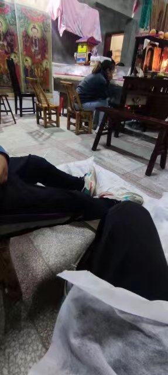

死亡,这个词在我年少时,那郁郁寡欢的性格让我好几次看见emo的视频,或者生活中遇到不舒服的事情就会想到这个问题,我目前为止没有至亲之人离我而去,所有的离别都似乎还有重逢的机会.
1
感觉对于死亡是飘渺的,我没上大学的时候,觉得自己就是整个宇宙,自己就是奥特曼一样,即便什么重担,什么困难,自己都可以挑起来,管他的呢,身体也没生过大病,直到我在现在记不清了的那几个时刻,深切的感觉自己太渺小了,自己也不过是个生物,也会累,也会出现以前不能理解大人们的那种腰酸背痛,细想起来,不知道何时就没有嚎啕大哭了,竟然几年都不会留下眼泪了
2
二伯，这是21年二伯去世的时候给跪孝的时候。这是第一次交亲的人离我而去，就在一年前还和我在早餐店吃早餐还让我好好学习。我确实能理解了，家里面如果半夜给你打电话多半是你要承担一些重要的事情了，那天晚上妈妈给我打电话，说二伯块不行了，要我回去，我是这个家族里面男性后代最大的，二伯的女儿和二伯也不对付。第二天一早就坐高铁回去，1000公里，路上一路也不知道在想些什么，即没有悲伤，也没有多余的情绪。
3

亲人，二伯的妹妹也就是我的小三伢，在我回去的几天里面一直守在冰柜旁边，就这么呆呆望着，做法的法师出来敲锣打鼓的时候会哭述上几句，我记得我当时回去了两天，跪了一天一夜，半夜的时候简直比上数学课还困，做法的又时不时超大声，等到那天早上，竟然也下雨了，要把二伯拉到村子外面的车上送去火葬场了，也就是这个时候，小三伢突然间就抱着大哭大叫，也是，这一拉走，就什么都没了，除了仅存的记忆。
4